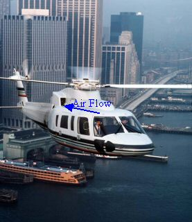
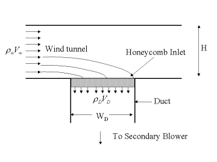
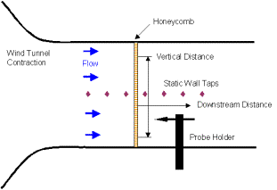
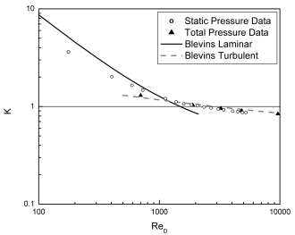
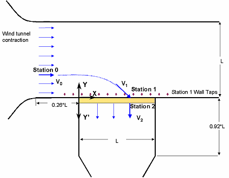
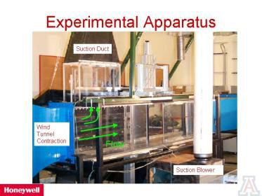
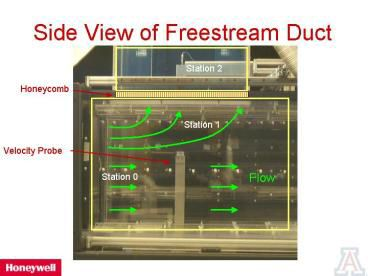
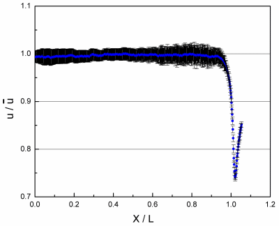
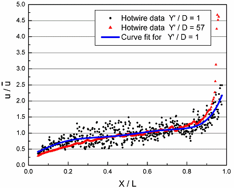
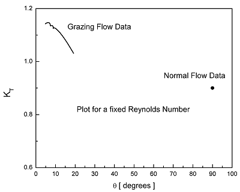

Characterization of the Flow and Pressure Drop in Honeycomb Inlets with Grazing Flow |
|
Project TeamAlfonso Ortega, John Keffler, Seth Pleskach Project SponsorHoneywell Engines, Systems and Services; Sponsor Member: Bruce Bouldin Motivation |
|
|
With an increased emphasis on installed power capabilities, the design of helicopter inlets has become more challenging. Simple forward-facing inlet (see figure 1a) openings are no longer acceptable. A recent, non-traditional inlet style incorporates the use of a honeycomb material that is arranged into panels that are installed flush with the helicopter fuselage (see figure 1b). The inlet duct that feeds the gas turbine engine attaches to the downstream side of these honeycomb panels. The honeycomb's primary function is to protect the engine from large particles. However, these flush honeycomb panels prove to be an aerodynamic design challenge. This is especially true during forward flight conditions. In these conditions, the air that feeds the helicopter's gas turbine engines flows along, or grazes, the fuselage and flush honeycomb panels and must make a dramatic 90° turn into the honeycomb before entering the engine through the inlet duct. This dramatic change in airflow direction can result in a significant increase in total pressure drop through the honeycomb, compared to the situation in which the flow approaches from a direction normal to the inlet plane.
 Figure 1: a) An Example of a Traditional Forward Facing Inlet, b) A Conceptual Rendering of a Grazing Inlet (Picture from Sikorsky) Project Description
In order to capture the aerodynamic impact of the
honeycomb style inlet system, Computational Fluid Dynamics (CFD) models
are commonly used to model the external approach flow, the honeycomb,
and the downstream inlet duct feeding the engine. The use of honeycomb
panels introduces challenges and uncertainties into the CFD modeling.
Creating a local grid which models the honeycomb structure would result
in grid sizes that are prohibitively large. An alternative approach is
to model the honeycomb as a Porous Media volume element where the
pressure drop that represents the impact of the honeycomb panel is
calculated using simple algebraic formulations resulting from the
theory of porous media. In that formulation, the pressure loss is
ultimately computed by locally applying total pressure drop
coefficients, K. Empirical loss coefficients for flow through honeycomb
like structures exist in the literature, but only for flow directed
normally at the honeycomb [1]. No data exists in the open literature
for the pressure drop through honeycomb panels exposed to a grazing
flow.
 Figure 2. Conceptual View of Wind Tunnel Experiment Simulating Grazing Flow at a Honeycomb Inlet
Experimental Setup and Recent Results
Figure
3 is a schematic of the wind tunnel setup for the normal flow case. The
static pressure was measured with a series of static wall taps and the
total pressure was measured with a pitot probe.  Figure 3, Normal Flow Wind Tunnel Schematic
The
experimental data for the normal flow case was compared to an
analytical solution for flow through a grille (Figure 4). It was found
that the data and the analytical solution were always with in 5% for
the turbulent case.
 Figure 4, Loss Coefficient for Normal Flow Data
Figure
5 is a schematic of the wind tunnel setup for the grazing flow
orientation. The total and static pressure was measure at all three
stations. The velocity was also measured at station 1 and station 2
with a hot-wire anemometer. Figures 6 and 7 show the actual
experimental setup.
 Figure 5: Grazing Flow Wind Tunnel Schematic
 Figure 6: Actual Experimental Setup
 Figure 7: Side View of the Actual Test Section
Detailed
grazing flow measurements were made at a single test condition. The
approach flow had a Reynolds number based on the panel length of 106,
and a cell Reynolds number of 5500. At station 2 the exit flow had an
average Reynolds number based on the panel length of 105, and a cell
diameter Reynolds number of 570. The suction ratio, SR, was 10.8%.
Figure 8 shows the velocity profile at station 1. The error bars
plotted on the data are not the uncertainty in the measurement but the
local RMS turbulence.
 Figure 8: Velocity Profile at Station 1
Figure
9 is a plot of the total velocity profile at Y'/D = 1, and 57 behind
the honeycomb panel measured with a single wire hotwire anemometer.
Because the honeycomb is a natural flow straightener, the lateral
velocity component vanishes, and thus the velocity profile of Figure 9
also represents the normal velocity component that passes through the
honeycomb.
 Figure 9, Velocity Profile Behind the honeycomb
From
the outset, one of the goals of the experimental study was to assess
the impact of flow turning on the total pressure loss coefficient, KT.
It is seen that the loss coefficient in Figure 10 decreases
monotonically with approach grazing angle from 1.15 at 5o to 1.05 at
15o, where the grazing angle is measured from the line parallel to the
honeycomb inlet plane. In contrast, the loss coefficient asymptotes to
a value of 0.9 in the normal flow situation where the grazing angle is
90o. Data in the region between 15o and 90o was not obtained, as this
grazing angle was not achieved with the suction ratio (SR) of 10% that
these data represent.
 Figure 10, Loss Coefficient For Grazing Flow
For a more detailed report of this study, see the paper that will be submitted to the ASME winter meeting.
Publications |
|
 PDF
PDF